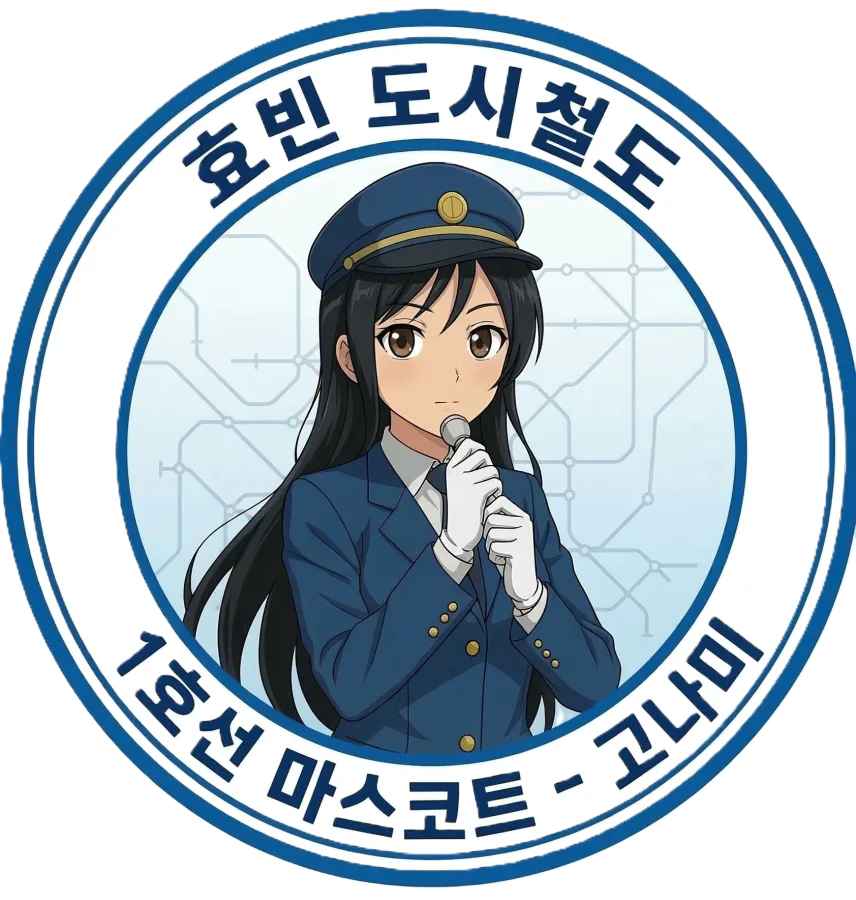
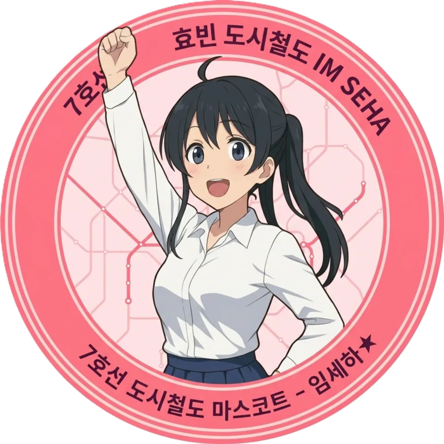

효빈교통공사 캐릭터들
| 등 장 인 물 |
1호선 | 2호선 | 3호선 | 4호선 | 5호선 | 창전선 |
|---|---|---|---|---|---|---|
 고나미 |
하루빈 | 박라미 | 다로나 | 미소하 |  심세이 심세이 |
|
| 6호선 | 7호선 | 8호선 | 빈효선* | |||
| 라세나 | 임세정 |  임세하 |
유리아 | 전노아 | ||
- 1. 개요
- 2. 상세 설정
- 2.1. 성격 및 특징 (천사표 소동물)
- 2.2. 학력 및 장래희망 (예비 선생님)
- 2.3. 외형 및 디자인
- 3. 인간 관계
- 4. 사건 사고
- 5. 여담 및 트리비아
1. 개요
효빈시 최강의 팩트 폭격기 미소하를 단숨에 무장해제시키는 마법의 주문.
효빈교통공사 5호선 마스코트인 미소하의 하나뿐인 소중한 여동생. 현재 복지여자고등학교 2학년에 재학 중이다. 언니 미소하와 판박이처럼 닮았으나 체구는 훨씬 작고 가녀린 145cm의 콩알 요정이다.
냉철하고 무자비한 정책 심판관인 언니와는 정반대로, 남에게 싫은 소리 한 번 못하는 100% 순도의 천사표 성격을 지녔다. 아픈 아버지를 간호하며 묵묵히 집안일을 돕는 영리하고 착한 동생으로, 언니 소하가 근로장학생을 뛰고 사회의 부조리와 맞서 싸우는 가장 절대적인 이유이자 '역린' 그 자체이다.
2. 상세 설정
2.1. 성격 및 특징 (천사표 소동물)
"세상의 부조리로부터 지켜내야 할 마지막 순수함"
언니 미소하가 무자비한 '다중회귀분석'과 '빨간 바인더'로 세상을 팩트로 두들겨 패고 다닌다면, 소율이는 팩폭 스킬이 전무한 맑고 무해한 성격이다. 가난하고 힘든 가정 환경 속에서도 구김살 없이 밝게 자라며 아버지를 전담하여 간호하는 자칭 타칭 살림 요정이다. 타인에 대한 배려심이 깊고, 작은 칭찬에도 얼굴을 붉히며 쉽게 감동하는 순진무구함을 지녔다.
🐾 반 공식 '소동물(보호 대상 1호)'
고등학교 진학 후 특유의 순둥하고 싹싹한 성격 덕분에 반 친구들 사이에서 완벽한 '소동물 취급'을 받고 있다. 쉬는 시간마다 같은 반 여자애들이 소율이의 자리로 몰려와 머리를 '쓰담쓰담' 해주는 것이 아예 학급의 정례화된 루틴(의식)이 되어버렸을 정도다.소율이 본인은 "나 어린애 아니야~"라며 입술을 삐죽 내밀고 부끄러워하는 척하지만, 사실 속으로는 다정한 친구들의 극진한 애정과 스킨십을 내심 엄청 즐기고 있다는 게 가장 귀여운 함정 포인트다.
2.2. 학력 및 장래희망 (예비 선생님)
언니인 미소하가 워낙 다중회귀분석을 숨 쉬듯 해내는 '규격 외의 천재(아웃라이어)'라 묻히는 감이 없지 않으나, 소율이 역시 반에서 늘 최상위권을 유지하는 성실한 모범생이다. 본인이 맘만 먹으면 당장 언니가 다니는 명문 효빈대학교에도 충분히 진학할 수 있는 준수한 학업 성취도를 자랑한다.
하지만 소율이의 진짜 꿈은 통계나 정책 분석 같은 거창한 분야가 아니라, 아이들을 진심으로 사랑하고 올바른 길로 이끌어주는 초등학교 선생님이 되는 것이다. 다정다감하고 아이들을 유독 좋아하는 성격 덕분에, 고등학교 졸업 후 교대(교육대학교)로 진학하는 것을 최우선 목표로 삼고 열심히 공부하고 있다.
2.3. 외형 및 디자인
언니 미소하의 상징인 굵은 갈색 웨이브 머리와 청순한 파란색 눈동자를 고스란히 물려받았지만, 스타일링에서 큰 차이를 보인다. 긴 머리를 묶고 다니는 언니와 달리 산뜻한 단발머리를 하고 있으며, 머리 옆에는 커다란 빨간 리본 대신 순수한 하얀색 리본을 달고 있어 요정 같은 분위기를 자아낸다. 이 설정을 헷갈린 어떤 AI가 둘의 나이와 리본 색깔을 뒤바꿔놓아 소하가 구글 서버를 셧다운 시키려 했다는 무서운 전설이 있다.
마스코트 중 최단신(153cm)인 언니보다 무려 8cm나 더 작은 145cm의 왜소한 체형을 가졌다. 본인은 작고 아담한 체구를 딱히 신경 쓰지 않지만, 주변에서 귀엽다며 머리를 쓰다듬는 일이 일상다반사다.
3. 인간 관계
3.1. 가족 관계 (언니 미소하)
- 언니 미소하: 소율이 세상에서 가장 존경하고 사랑하는 가족이자 방패. 매일 고생하는 언니를 위해 따뜻한 밥을 챙겨주며 언니의 멘탈을 치유한다. 반대로 소하에게 소율은 절대 건드려서는 안 될 역린이다. 만약 학교나 길거리에서 누군가 소율이의 체형이나 가난을 비하했다간, 그 학생의 3대 가문은 소하의 빅데이터 민원 폭격에 의해 사회적으로 매장당한다.
- 아버지 미성규 & 어머니 오순임: 투병 중인 아버지를 매일 간호하는 전담 간병인 역할을 자처하며, 억척스럽게 생계를 책임지는 어머니를 도와 살림을 꾸려나가는 효녀 중의 효녀.
3.2. 전설의 콩알 사건 (vs 유리아: 영혼의 짱친)
어느 날 8호선 마스코트 유리아(2008년생, 동갑)가 역으로 놀러 왔다가 소율이를 처음 보고 깜짝 놀라 해맑게 "와, 진짜 콩알만 하다!"라고 외친 대형 참사가 발생했다. 소하가 동생의 체형을 비하한 줄 알고 두꺼운 서류철을 물리적 흉기로 바꾸려던 찰나, 유리아가 광속으로 "일, 일본에선 콩알(마메, 豆)만큼 작고 소중해서 미치도록 귀엽다는 최고의 극찬입니다!!"라고 필사적으로 포장하여 겨우 살아남았다.
그런데 놀라운 반전은, 평소 소심하고 숫기 없는 소율이가 유리아의 이 '콩알' 발언을 진짜로 '귀엽다'는 최고의 칭찬으로 순수하게 받아들였다는 점이다. 소율이는 태어나서 처음으로 먼저 용기를 내어 유리아에게 "친해지고 싶어!"라며 다가가는 기적을 보여주었고, 붙임성 만렙인 유리아 역시 이를 격하게 환영하며 두 사람은 현재 틈만 나면 같이 놀러 다니는 영혼의 짱친(베프) 사이가 되었다.
3.3. 언니의 찐친들 (vs 임세하, 전노아의 '비행기 놀이' 사태)
소율이가 중학교 3학년이던 시절, 언니 소하의 절친인 7호선 임세하와 빈효선 전노아가 처음으로 소율이의 실물을 영접하게 되었다.
- 문제는 소율이의 말도 안 되는 콩알 요정 비주얼(당시 키 140cm 초반 추정)을 본 두 사람이, 소율이를 유치원생 내지 초등학교 저학년 쯤 되는 진짜 꼬마애로 착각해 버렸다는 것이다. 심지어 두 사람은 너무 귀엽다며 소율이를 번쩍 들어서 '비행기 놀이'를 태워주려고 했다.(...)
- 이 광경을 목격한 미소하가 기겁하며 "야 미친놈들아!! 얘 중3이야!!"라고 팩트 폭격을 날리자, 상식인(?) 포지션인 임세하는 초 단위로 멘탈이 나가며 충격에 굳어버렸다.
-
그러나 관종력과 뻔뻔함이 만렙인 전노아는 당황하기는커녕 "그런 거 알 빠냐!!"를 시전하며 기어코 소율이에게 비행기 놀이를 강행하는 광기를 보여주었다.
미소하가 빨간 바인더를 장전했다. - 참고로 당사자인 소율이는 공중에서 꺄르륵 웃으며 진심으로 그 비행기 놀이를 즐거워했다는 건 안 비밀이다. 이 사건 이후 세하와 노아는 소율이를 친조카 대하듯 끔찍이 아낀다.
3.4. 마의 '08년생 동갑내기' 라인 (하루아, 임세연, 심세이)
효빈교통공사 마스코트와 가족들 중 2008년생(08즈) 라인업은 화려하다. 소율이는 이 모임에서 힐링 마스코트로 통한다.
- 하루아 (하루빈의 여동생): 교외 청소년 자원봉사단 첫날, 낯을 가려 구석에 쭈뼛거리고 있던 소율이에게 극E(외향형) 텐션의 하루아가 다짜고짜 다가와 "너 완전 귀엽다! 오늘부터 내 친구 해라!"라며 손을 덥석 잡은 것이 첫 만남이다. 기가 쪽 빨려 하던 소율이가 조심스레 정성껏 싸 온 계란말이 간식을 건네자, 그걸 먹은 하루아가 폭풍 감동의 눈물을 흘리며 평생의 충성을 맹세(?)했다는 훈훈한 비화가 전해진다.
-
임세연 (임세하의 여동생): 같은 봉사활동 조였던 세연이가 휴식 시간에 "아... 우리 언니(임세하)가 또 내 방에 쇳덩어리 기계 부품 주워다 놨어..."라며 깊은 한숨을 쉬고 있자, 소율이가 슬며시 다가가 "우리 언니(미소하)는 밤새도록 엑셀로 다중회귀분석표 돌리면서 화내..."라고 맞장구를 쳤다. 공대 너드 언니와 팩폭 심판관 언니를 둔 '비범한(광기 어린) 언니들 밑에서 고통받는 동생들의 애환'이 완벽하게 공감대를 형성하며, 그 자리에서 손을 맞잡고 영혼의 단짝으로 거듭났다.
서로 언니 뒷담화를 할 때 가장 눈이 반짝인다. - 심세이 (창전선 마스코트): 유리아를 통해 건너건너 소개받아 만난 창전구의 우아한 아가씨. 평소 세련된 라틴 하이텐션을 뽐내던 심세이가 소율이를 처음 보자마자 그 말도 안 되는 무해한 귀여움에 압도되어 스페인어 감탄사(¡Dios mío!)조차 뱉지 못하고 입을 떡 벌린 채 할 말을 잃었다는 전설적인 소문이 있다. 이후 심세이는 소율이만 보면 최고급 수제 디저트를 한가득 사다 바치는 극성 팬보이(?) 모드가 된다고 한다.
4. 사건 사고
4.1. 소율이 장래희망에 대한 악질 교사의 비하사건
학교에 다니던 중 발생했던, 미소율을 건드리면 왜 진짜로 뼈도 못 추리게 되는지를 똑똑히 보여준 대사건.
사실 소율이는 어릴 적 유독 작은 체구와 기초생활수급자라는 가난한 환경 때문에 짓궂은 아이들에게 지독한 따돌림과 괴롭힘을 당한 가슴 아픈 기억이 있었다. (물론 그 가해자 놈들의 만행을 뒤늦게 알아챈 언니 미소하가 눈이 완전히 돌아가버렸고, 그 주동자 학생들의 학폭위 회부 및 부모들의 직장 내 비위 사실까지 영혼까지 털어버리는 '빨간 바인더'의 무자비한 빅데이터 폭격에 의해 그 가해자 일가족 전체가 야반도주하듯 효빈시를 떠나야 했다는 흉흉하고도 통쾌한 전설이 전해진다...^^)
그 후 고등학교에 진학한 소율이는 과거의 상처에도 억지로라도 밝게 웃으려 노력하는 착한 성격 덕분에 반 친구들에게 완벽한 '소동물(보호 대상 1호)' 취급을 받았다. 심지어 어쩌다 보니 학급 부반장까지 맡게 되었는데, 궂은일도 도맡아 하는 성실하고 예쁜 짓만 골라 하는 소율이를 같은 반 여자애들은 물론 담임 선생님마저도 친딸처럼 극진히 아끼고 사랑하고 있는 상태였다.
그러던 어느 날, 학교의 진로 상담 교사(사실상 교사 호소인)가 2학년 진로 상담 중 소율이의 장래희망이 '초등학교 교사(교대 진학)'인 것을 보고 "네 키가 145cm인데 초등학교에 발령받으면 초등학생 애들과 네가 구분이 가겠냐? 칠판에 손이나 닿겠어? 네가 무슨 선생을 하냐"며 학생의 신체적 콤플렉스와 장래희망을 동시에 무참히 짓밟는 최악의 악질 막말과 비아냥을 공개적으로 쏟아냈다.
순도 100% 천사표인 소율이는 그 자리에서 화 한 번 내지 못하고 눈물을 참으며 억지로 웃어넘겼지만, 그 망언을 곁에서 직관한 반장과 반 친구들은 이미 그 악질 교사를 쓰레기 보듯 경멸하며 즉각적인 집단행동에 돌입했다.
- 학급 전체의 수업 보이콧: 반장의 주도 하에 해당 교사의 진로 수업 시간마다 반 전체가 약속이나 한 듯 책상에 엎드려 자거나, 교사의 어떤 질문에도 일절 대답하지 않는 무언의 '합법적 파업(투명 인간 취급)'이 시작되었다.
- 인간 방패 결성: 체육계 친구들을 필두로, 그 진로 교사가 복도에 나타나거나 반에 들어오기만 하면 소율이 주변을 이중 삼중으로 에워싸 교사의 시선과 접근 자체를 원천 봉쇄했다.
- 노골적인 혐오와 조리돌림: 교사가 지나갈 때마다 반 전체가 일제히 싸늘한 눈빛(속칭 벌레 보는 눈빛)으로 위아래를 훑어보며 대놓고 혀를 쯧쯧 차는 등, 사실상 학생 전원이 교사를 역으로 완벽하게 기수열외시켜버렸다.
더 압권인 것은 소율이를 각별히 아꼈던 담임 선생님인 이목희 교사의 반응이었다.
그렇게 싹싹하고 듬직했던 부반장을 울렸다는 소식을 듣자마자 극대노한 이목희 선생님이 곧바로 교무실로 쳐들어가 그 진로 교사의 멱살을 잡기 직전까지 가며 진짜로 '맞다이'를 뜰 뻔한 험악한 사태가 벌어졌다. 동료 교사들마저도 이목희 선생님을 말리기는커녕, 성실하고 착한 소율이에게 그딴 천박한 비아냥을 쏟아부은 그 진로 교사를 사람 취급도 하지 않고 완벽하게 기수열외시켜버렸다. 이미 가족들이 등판하기도 전에 학교 전체가 그 교사를 쓰레기로 규정한 것이다.
그리고 그날 밤, 혼자 방에서 숨죽여 우는 소율이를 언니 미소하가 기어코 발견하고 말았고, 다음 날 학교에는 '물리적 폭주'와 '데이터의 광기'가 동시에 강림했다.
딸이 겪은 수모를 전해 듣게 된 아버지 미성규가, 평소 디스크와 후유증으로 누워만 지내던 병상을 박차고 일어나 그대로 학교로 쳐들어가 교무실을 완전히 뒤집어엎으며 벼락같은 사자후를 토해냈다. (과거 지옥의 두청운수 시절 75인승 과적 버스를 몰며 온갖 진상을 때려잡았던 베테랑 기사의 짬바가 폭발했다 카더라)
이 소식을 전해 들은 미소하와 그녀의 찐친들(임세하, 전노아)의 분노는 상상을 초월했다. 이 셋은 짐을 싸던 교사를 몰래 찾아가 "조용히 효빈시를 뜨지 않으면, 물리적, 행정적, 사회적으로 네 존재 자체를 완벽하게 포맷해 버리겠다 (방긋)"라는 등골 오싹한 경고를 남겼다고 전해진다.
동료 교사와 학생들에게 완벽히 버림받아 고립된 상태에서, 분노한 아버지의 교무실 사자후와 언니들의 자비 없는 물리적/행정적 융단 폭격이 콜라보를 이루자 해당 악질 교사는 쏟아지는 지탄과 공포를 견디지 못하고 스스로 사직서를 제출한 뒤 야반도주하듯 효빈시를 떠나야 했다.
5. 여담 및 트리비아
- 언니와 식성이 반대라고 알려져 있었으나, 의외로 매운 것을 은근히 잘 먹는다는 사실이 밝혀졌다. 극한의 캡사이신을 퍼먹는 언니나 마라탕 5단계를 즐기는 어머니라는 '아웃라이어(규격 외)'들 옆에 있어서 상대적으로 맵찔이처럼 보였을 뿐이다. 반 친구들과 엽기떡볶이 오리지널 맛을 먹을 때는 땀 한 방울 흘리지 않고 평온하게 계란찜을 떠먹어 친구들을 경악하게 만들곤 한다.
- 언니 소하가 늘 품고 다니는 두꺼운 '빨간 바인더'의 진짜 위력(사회적, 물리적 파괴력)을 어느 정도 확실하게 눈치채고 있다. 가끔 언니 소하가 빡쳐서 출근할 때, 현관에서 해맑게 웃으며 "언니! 오늘 그 주무관님 만나러 간댔지? 빨간 바인더 잊지 말고 꼭 챙겨가~"라고 살뜰하게(?) 챙겨주는 모습은 곁에 있던 사람들의 등골을 오싹하게 만든다.
🎤 [밈] 100명의 그녀 성우 장난 대통합 사태 (무려 5명 참전)
임씨 가문 6남매 중 셋째 언니 임선아, 다섯째 동생 임세연, 미소하의 동생인 미소율, 1호선 기관사 고나미, 그리고 덕주 1호선 마스코트 이덕희까지 한자리에 모이면 서브컬처 팬덤이 그대로 폭발해버린다.
하필이면 이 다섯 명의 일본판 성우 조합이, 모 여친이 100명이나 되는 전설의 러브코미디 애니메이션(너를 너무너무너무너무 좋아하는 100명의 그녀)의 1번째, 2번째, 3번째, 4번째, 그리고 7번째 여친 성우진 라인업과 소름 돋게 완벽히 일치하기 때문이다!
- 1번째 여친 (하나조노 하카리) = 임선아 (CV. 혼도 카에데)
- 2번째 여친 (인다 카라네) = 임세연 (CV. 토미타 미유)
- 3번째 여친 (요시모토 시즈카) = 미소율 (CV. 나가나와 마리아)
- 4번째 여친 (에이아이 나노) = 고나미 (CV. 세토 아사미)
- 7번째 여친 (하라가 쿠루미) = 이덕희 (CV. 신도 아마네)
이쯤 되면 효빈메트로 캐스팅 담당자가 대놓고 노린 게 아니냐는 합리적 의심이 들 정도. 덕분에 위키 2차 창작 게시판이나 팬아트에서는 이 5명이 모여서 밥을 먹고 있으면, 어디선가 아이죠 렌타로가 튀어나와 100등분의 사랑을 실천하며 플래그를 꽂으려 드는 기묘한 패러디가 대폭발했다.
물론 이 세계관에 렌타로가 등장해서 저들에게 플래그를 꽂으려 들면, 5호선 미소하의 다중회귀분석 빨간 바인더, 7호선 임세하의 몽키스패너, 1호선 고나미의 철도안전법 매뉴얼, 그리고 덕주 1호선 이덕희의 다대기 푼 뚝배기에 맞아 죽을 확률이 500%다.
5.2. 실제 모티브 (문수연 선생님의 실화)
이 감동적이고도 통쾌한 썰은 놀랍게도 효빈광역시 서구 사복동에 위치한 복지여자고등학교에서 벌어졌던 실제 사건을 모티브로 만들어졌다 카더라. 현실이 소설보다 더 영화 같다.
- 현실은 143cm의 콩알 요정: 미소율의 실제 모티브가 된 인물은 '문수연'이라는 학생으로, 미소율(145cm)보다도 더 작고 소중한 143cm의 체구였다고 한다.
- 초등교사 vs 중등 국어교사: 교대 진학을 목표로 했던 소율이와 달리, 수연 학생은 중등교사(사범대)를 지망했다. 내신 성적도 최상위권이라 명문 효빈대학교 사범대(국어교육과) 진학할 실력이 충분했다.
- 임용고시 원패스와 완벽한 금의환향: 2026년 현재, 피 터지기로 악명 높은 효빈광역시 임용고시를 단 한 번 만에 합격(국어 과목)하는 기염을 토했다! 모교인 복지여고로 교생 실습을 나간 데 이어, 사립학교인 복지여고에 정식 국어교사로 채용되며 완벽한 금의환향을 이루어냈다.
자신을 지켜준 참스승 이목희 선생님과 '동료 교사'로 마주하게 된 가슴 웅장해지는 해피엔딩이다. - 악질 교사의 현실판 최후: 픽션에서는 미소하 언니 연합의 폭격이 가해졌다면, 현실에서는 문수연 학생의 친구들이 똘똘 뭉쳐 해당 악질 교사를 '아동학대'로 정식 고발해 버렸다.(...) 결국 이 쓰레기 교사는 효빈시는 물론 교직 사회 전체에 소문이 쫙 퍼져 교직 사임 및 영구 퇴출을 당하며 완벽하게 사회적, 법적으로 매장당하는 참교육 엔딩을 맞이했다.